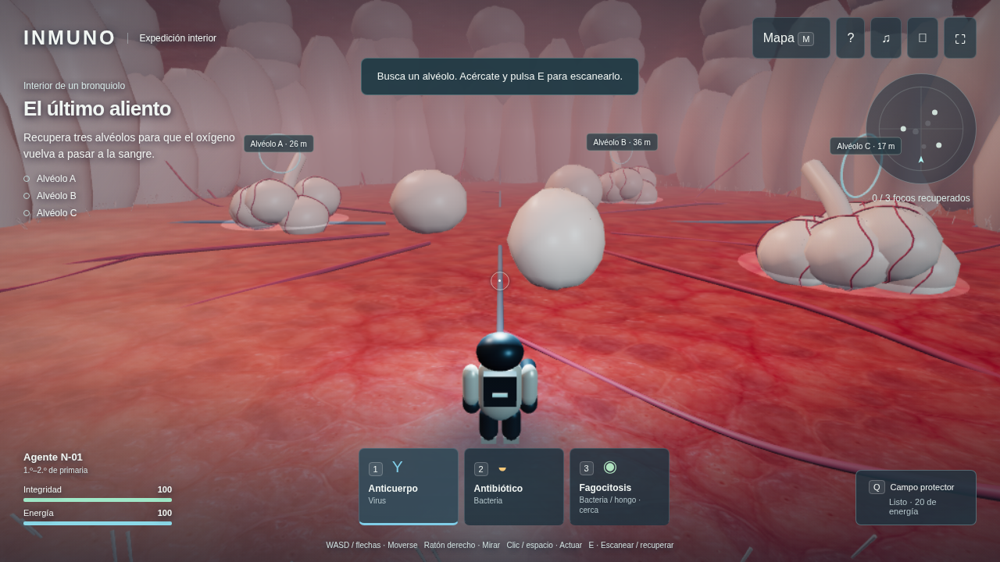

Expedición interior
La aventura está dentro de ti.
Un nanobot. Cuatro regiones. Tú tomas las decisiones.

Explora y escanea
Acércate. Escanea.
Muévete y pulsa E junto al foco.

Elige tu defensa
Identifica y decide.
Elige 1, 2 o 3. Apunta y actúa.
Virus → AnticuerpoBacterias → Antibiótico

Recupera el tejido
Devuelve el equilibrio.
Despeja el foco. Después mantén E para recuperar tejido.

Mapa del cuerpo
Cuatro regiones. Tu misión.
Pulmones, circulación, neuronas y ganglios.
En Inmuno, la aventura está dentro de ti. Explora tejidos del
cuerpo humano con tu nanobot. Tú decides cada acción.
Muévete con las flechas o con el joystick. Arrastra para mirar.
Acércate a un foco y pulsa E para escanearlo.
Identifica la amenaza y elige tu defensa. Anticuerpo contra virus. Antibiótico
contra bacterias. Apunta con el círculo central y pulsa para actuar.
Después de despejar el foco, vuelve al tejido y mantén E
para recuperarlo. Usa el campo protector y recoge recursos si necesitas
ayuda.
Completa tres focos en cada región. Viaja por los pulmones, la
circulación, las neuronas y los ganglios. Abre el mapa para ver
tu siguiente misión.